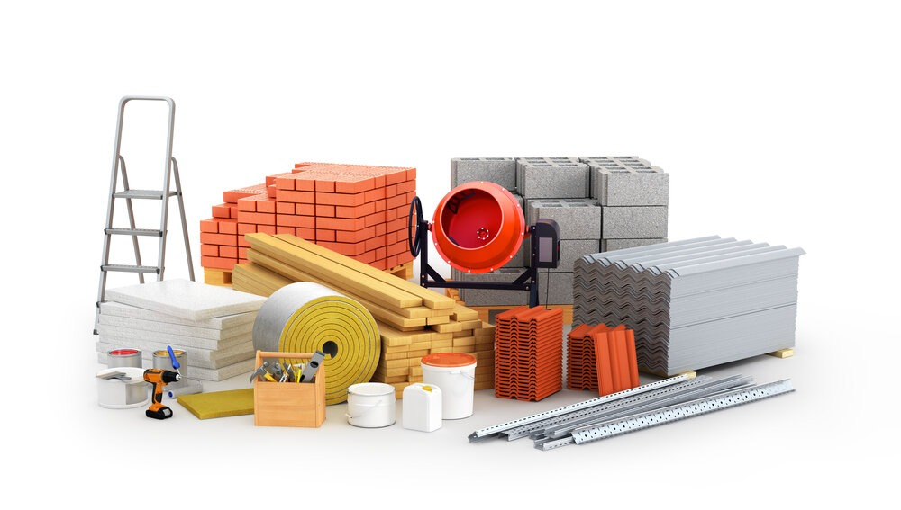
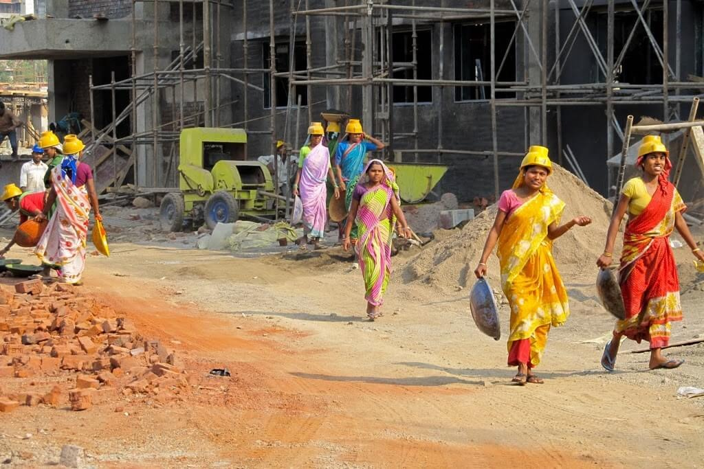
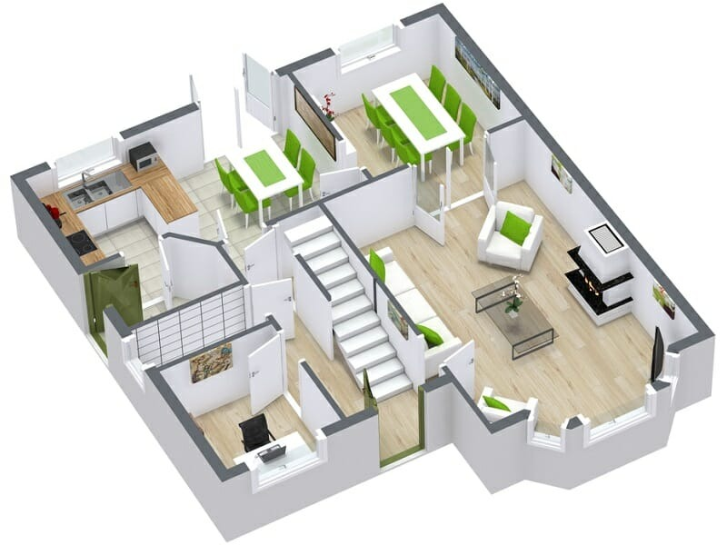

Materials
 Construction materials are the substances and products used in the construction, renovation,
or building of structures and infrastructure. These materials vary widely in type and function, and their selection depends on factors such as the
project's requirements, budget, location, and intended use. Here are some common construction materials:
Planner
Construction planners, also known as construction planners or project planners, play a critical role
in the construction industry. They are responsible for the strategic planning, scheduling, and coordination of various activities involved
in a construction project. Here is an overview of construction planners and their responsibilities:
constuction workers
Construction workers, often referred to as laborers or construction laborers, are essential professionals
in the construction industry responsible for various tasks related to building, renovating, and
maintaining structures and infrastructure. Their roles and responsibilities can vary depending on
the specific construction
project and their level of expertise. Here are some common aspects of construction workers' roles:
Graphic designing
A graphic designer for home, often referred to as an interior graphic designer or residential
graphic designer, is a professional who specializes in enhancing the visual appeal and aesthetics
of residential interiors. Their role is to create visually pleasing and harmonious design elements
within homes.
Here are some key aspects of what a graphic designer for home might do: